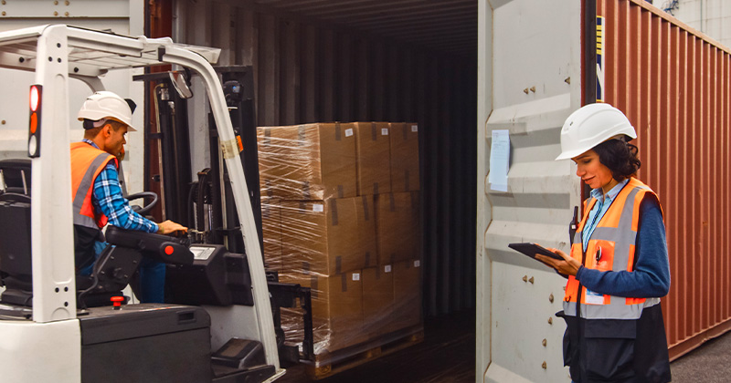
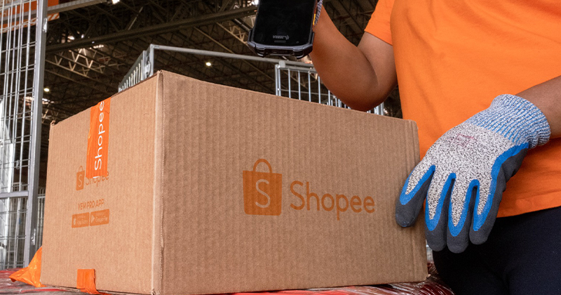
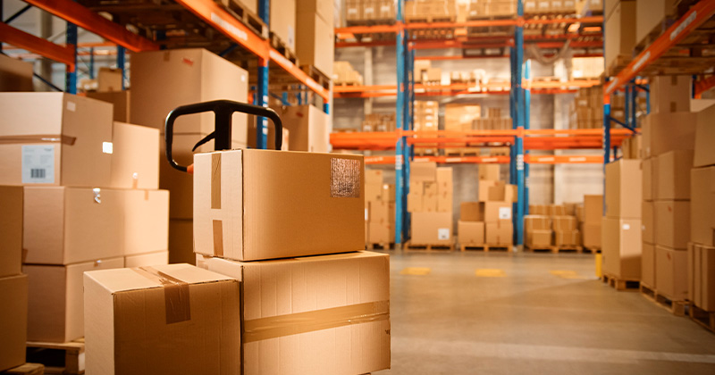

|  | |
|---|---|
.: Noticias do Mundo da Logistica :.Fique por dentro! As novidades da Logistica do Brasil e do mundo. |
|
Shopee inaugura seu primeiro hub logístico em Manaus.O espaço opera na última milha e visa reduzir o tempo de entrega para os consumidores amazonenses. Logística tem crescimento de 94,7% nas vagas de trabalho de janeiro a outubro, aponta BNE.Segundo o Banco Nacional de Empregos, funções que mais cresceram em número de vagas foram motorista, estoquista e auxiliar de logística. Blue Logística aumenta produtividade em 40% com sistema WMS da Infor.A tecnologia tornou-se parte do processo de expansão da Blue Logística, que inaugurou uma unidade no bairro Pavuna, no Rio de Janeiro. |
|
|
Você está recebendo este e-mail porque se inscreveu no nosso blog. |
|